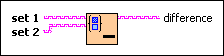

Set Difference VI
Owning Palette: Set VIs and Functions
Requires: Base Development System
Computes the difference of two sets. The difference is the elements from the first set that are not included in the second set.

 Add to the block diagram Add to the block diagram |
 Find on the palette Find on the palette |